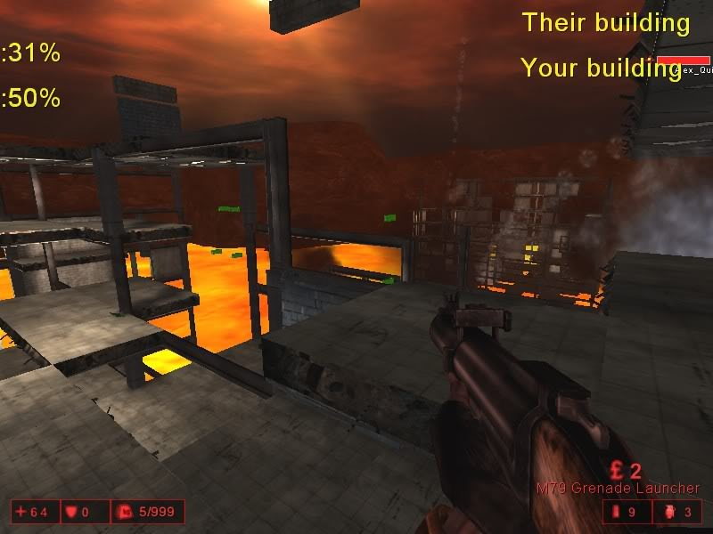

Performance can suffer if you blow up too many tiles. And this was WIP project, don’t expect too much polish.
Both teams spawn with M79 grenade launchers and must blow up the opposing team’s building floor by floor. Respawns are infinite, but each time a floor is destroyed you will spawn on the next available floor down. Once the last spawn area in your building is destroyed you will not be able to respawn if you die © Alex Quick
And you can always add some bots for more fun!
Cmdline for dedicated servers:
Game=Glassmutator.GlasshouseGameInfo
Glass House Mod
- Authors - Alex Quick
- GH-Outskirts.rom
- Links - GitHub
- Notes - Greylisted

Hell Pit

Latitude